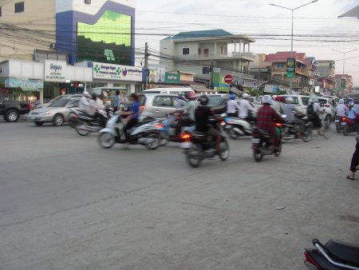

Sharing in Our Ministry
Clarification
Last time I talked about what it looks like to partner with missionaries in their ministry. Undoubtedly, some readers might have taken the article as an indirect and roundabout way to ask for your support for my own missionary endeavors. Hopefully that was not the case; my sincere desire in the last update was to encourage us all to support the missionaries who are already out there on the front lines.
Just so we’re clear, I am committed to being as straightforward and forthright as possible, especially in regard to raising support. In other words, I will not ask for support indirectly. Please trust that when I’m not asking for support, I am not asking for support.
My Stance on Financial Support
Perhaps this seems self-explanatory; however, I feel the need for such a clarification because this is not always the case. Today’s Christian culture is such that missionaries sometimes would rather ask for “prayer” and hope that people understand that they really need money also. What happens is that while sometimes not asking is motivated by conviction (e.g., Hudson Taylor; sometimes this is motivated by a desire to not have to ask for money!
A young Hudson Taylor For myself, I have had to prayerfully consider how to approach this. I do not believe that it is inappropriate to ask for support (of any kind, financial support included). In fact, in my opinion there is a certain amount of honor in being willing to ask when there is a need. This is why previously I had asked for financial support to go on the trip this last December. My reasoning behind this was that ultimately, I was not asking for money for myself, but rather for the sake of the Great Commission. To a degree, I would affirm something similar today — especially for a short-term trip, where funds go towards the trip and not towards personal living expenses.
At the same time, I need to avoid the temptation to view godliness as a means of financial gain (1 Timothy 6:5-11). There is a lot more I could say on this, but to avoid going into too much detail, allow me to summarize. I will adopt the following policies:
- I will not ask for financial support or take actions with the purpose in mind of raising financial support.
- At the same time, I will not refuse the gift itself. In fact, I will be very grateful for whatever anyone has to give! But my hope is that my heart will always be the same as the Apostle Paul’s, when he says: “not that I seek the gift itself, but I seek for the profit which increases to your account.” (Philippians 4:10-19).
- I am reaching out now and will continue to reach out in the future most of all so that you can so that you can partner with me in ministry no matter what that looks like.
- If God has placed the desire on your heart to give financially, then praise the Lord. If not, then praise the Lord! I know that there are a lot of needs and a lot of great things going on around the world. I’ll point some out myself when I see them. My goal is not that I would have a flourishing ministry, my goal is that gospel ministry would happen no matter who is doing it. If at some point it becomes apparent that the best way for me to serve Christ is by getting a side job to provide for me (and, Lord willing, my future family), then I will do so with joy.
- Nevertheless, I will let you know if I need to get a job while serving overseas or especially if I have to leave the field.
- If I do, please do not take this in the wrong way. If I do need to work, then I will take that as a sign that God desires the job to be part of my ministry. I firmly believe that — although sometimes God uses the contributions of the saints as part of how He opens doors — money is not required to do ministry.
- At the same time, many of you have expressed a desire for me to be able to focus my attention working directly with the church and to give towards that end. Therefore, I do want to keep you informed as those who are sharing in my ministry. This way you’ll know how to pray for me and will be able to give with intentionality if God has placed the desire to give on your heart.
- I also ask that you would join with me for the sake of the gospel in other ways. I cannot travel this journey alone! In fact, I hope that I never cease coveting your prayers and fellowship! But I also hope that both you and I will truly appreciate the fact that “support” is not synonymous with “donate” (there’s more to it than that!).
- I do recognize that this is an area of Christian freedom (see 1 Corinthians 9), and not the only way for missionaries to do this. But I do believe that this is the best way for me and my circumstances.
- If at all possible, I do not want to bring up money issues beyond just this once. My heart is to just put all of my cards on the table and speak forthrightly so that there is no miscommunication down the road.
- Nevertheless, please feel free to ask questions if this is confusing. I am an open book 🙂
Ways to Get Involved with the Ministry in Cambodia
With that out of the way, there are ways you can help. Although I wasn’t asking for help last time, I am this time! Here are some ways (apart from the prayer requests mentioned elsewhere in this update):
 Traffic in Cambodia. See? I need to ride a motorcycle!
- If possible, I would like to learn how to ride a motorcycle and/or dirtbike this summer, rather than having to make learn it in Cambodia where the traffic conditions are less than ideal. Any ideas?
- Also, this will probably be my last chance to see many of you before I leave for Cambodia. I would love to connect with you this summer if there’s a chance; even if you’re in a different part of the country, this summer will be my “farewell tour”, so we might be able to work something out. Let me know!
- Consider financially supporting translation work to help Cambodians grow in their faith. Think of your favorite book (outside of the Bible); chances are, Cambodians don’t have it available. For more on the translation work, see here.
- I do not plan on focusing my time in Cambodia on what is commonly called “Mercy ministry”. However, I do believe that it is important. Furthermore, there are a lot of terrible things going on in Cambodia that do need help. For one mercy ministry that Action Cambodia is involved with, click here. I also have the opportunity to visit the operations of Agape International Missions, who work with sex trafficking in Cambodia. Two of my friend Bora’s siblings work with them, and showed me some of what they do. For more information on them, click here.
- To support me financially: click here.